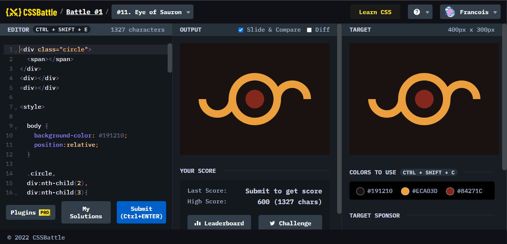

Battle #1 - Pilot Battle
Battle.1では、はじめということもあり、ウォーミングアップの12問が出題されているようです。ひとつひとつがどれくらいの難易度であるのか見てみましょう。
Default

ポイント
このデフォルトの四角形にdiv、span、classやid名をつけて目標物を作るものです。が、なるべく少ない文字で達成させることが出来るかが問題となる。
#1. Simply Square
ポイント
四角形の大きさを合わせて、デフォルトの四角形を端に寄せるために全体にmargin:0を書けることによって実現させている。
#2. Carrom
ポイント
position:relativeとabsoluteを用いて、それぞれ目的の位置に配置させる。
#3.Push Button

ポイント
四角形をまず作った後に、背景色に合わせた大きな円を書き、その後それぞれ目的の色の円を上から順に重ねて完成させている。(もう少し効率よく書けると判明するため後に説明。)
#4. Ups n Downs

ポイント
border-radiusを用いた丸みのある四角形を、nth-childで指定して、配置した(もう少し効率よく書けると判明するため後に説明。)
#5. Acid Rain

ポイント
border-radiusを用いた円に尖りのあるような図形を複数作り、どのように重なっているかを考慮して配置する。
#6. Missing Slice

ポイント
ここでは扇形を作ることがポイントで、border-radiusではなくさらに限定させた、border-top-right-radiusやborder-bottom-right-radiusを用いることで実現。
#7. Leafy Trail

ポイント
#5. Acid Rainと同じようなつくりであるが、ここで苦労した点は配置である。transform:translateのx軸、Y軸を%でしか指定したことがなく、%ではうまく配置できなくなったため、px指定で書き直したところ上手く配置できた。意外と時間がかかったもののひとつである。
#8. Forking Crazy
ポイント
ウォーミングアップの12問がここには掲載されていると書いてあるにもかかわらず、一番最初にどのように作るのか分からない第一の壁に当たることになり、特にフォークの先端部分が苦戦した部分である。nth-child(odd)と(even)でフォークの先端の条件を書いてから、ひとつずつまたnth-childで指定するという荒技を用いた。おそらく効率的な書き方はあると思うため、指摘をいただければ幸い。
#9. Tesseract
ポイント
これは意外と単純で、transform:translateと、rotateが併用できる部分を用いると単純にできる。#8. Forking Crazyに比べて難易度が下がり一安心したことを記憶している。
#10. Cloaked Spirits

ポイント
アイデアは浮かんだものの記述量の多さと工夫が必要と感じて骨が折れた部分。とにかく疑似要素を使って少ないdivとspanのタグで完成させようと押した部分。とにかく円を記述した。(もう少し効率よく書けると判明するため後に説明。)
#11. Eye of Sauron

ポイント
#10. Cloaked Spiritsと同じで、アイデアは浮かんだものの記述量の多さと工夫が必要と感じて骨が折れた部分。
#12. Wiggly Moustache

ポイント
#4. Ups n Downsと同じようなアップダウンのある課題であったため同じように記述すればよいかなと思ったが、ある程度幅を持たせた状態の記述の仕方が分からず、半円に背景と同色の円を重ねることによって髭の部分のマークを実現した。ここで初めて登場する便利な書き方であるbox-shadowが登場する。髭の丸い部分のパーツはこれを使って記述することで書く量も抑えられた。